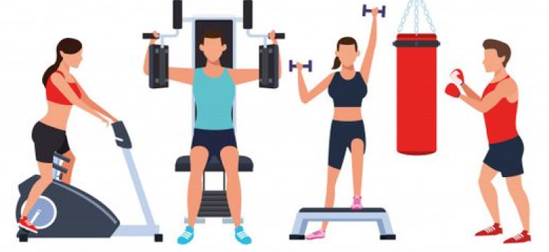

Las recomendaciones alimentarias son las mismas que para la población general, limitando principalmente la ingesta de grasas saturadas. Para ello, tendremos en cuenta la siguiente selección de alimentos:
Lácteos
La leche y los yogures serán desnatados; los quesos, magros. Se aconsejan 2-3 raciones al día para asegurar un aporte adecuado de calcio.

Carnes y pescados
Se retirará la grasa visible antes de la cocción. En el caso de las aves, quitar toda la piel. Evitaremos alimentos ricos en grasa saturada, como los embutidos y el tocino.

Cereales, legumbres y tubérculos
Aportan principalmente hidratos de carbono complejos, muy útiles en el control del apetito porque aumentan la sensación de saciedad.

Frutas y verduras
Elige frutas crudas de consistencia firme, evitando las piezas cocidas o los batidos que aportan menor saciedad.
Grasa y aceites
Utiliza métodos de cocción que precisen poca grasa (plancha, horno, papillote), reduciendo el uso de frituras, salsas.
Toda sesión de ejercicio debe estar compuesta por ejercicio aeróbico, ejercicio de fuerza, flexibilidad y ejercicios neuromotores.
Para incrementar su gasto de energía debe hacer ejercicio como mínimo 5 veces a la semana.
Debe comenzar con una intensidad moderada, avanzando de manera progresiva hacia un ejercicio vigoroso.
El tiempo mínimo de sus sesiones debería ser de 30 minutos, sin embargo su objetivo debe ser lograr sesiones de 1 hora o más.
Ejercicio aeróbico
Caminar, trotar, correr, nadar, ciclismo al aire libre o estacionario y aeróbicos.

Ejercicio de fuerza
Ejercicios que involucren el propio peso corporal o el uso de pesas con máquinas de gimnasio, mancuernas y ligas.
Ejercicios de flexibilidad
Ejercicios que produzcan un estiramiento muscular, tales como yoga, tai-chi, pilates, gimnasia, entre otros.
Ejercicios neuromotores
Dentro de esta categoría se encuentran los ejercicios que le ayudarán a mejorar sus tareas diarias.